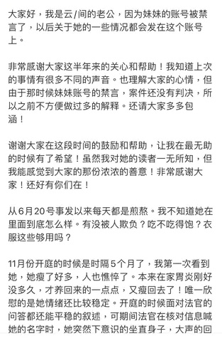
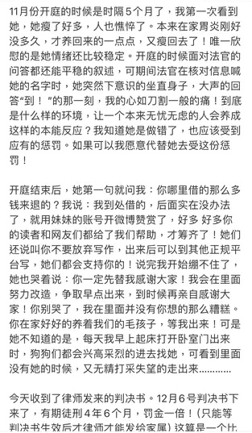
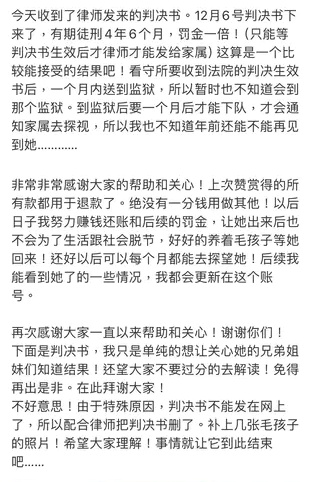

这就是为什么我坚持 任何国家机关 都是基于菲勒斯中心的 暴力机关 的原因。
@amber_toffee
还有，我想听听你对这个的法理学的解读。我认为判决逻辑成立但觉得不妥。
@Nevernessian

@amber_toffee
还有，我想听听你对这个的法理学的解读。我认为判决逻辑成立但觉得不妥。
@Nevernessian



找到了远上白云间的判决细节，是他丈夫发的，“开庭时面对法官问答都还能平稳叙述，在法官核对信息问她姓名时，她突然下意识的坐直身子，大声回答‘到！’，到底什么样的环境，能让一个本来无忧无虑的人产生这样的本能反应”
😭😭😭😭我心碎得裂开，太太会被摧残得ptsd再也不敢写了吗？为什么要审判想象力 https://t.co/L2xiNDFHFT
😭😭😭😭我心碎得裂开，太太会被摧残得ptsd再也不敢写了吗？为什么要审判想象力 https://t.co/L2xiNDFHFT